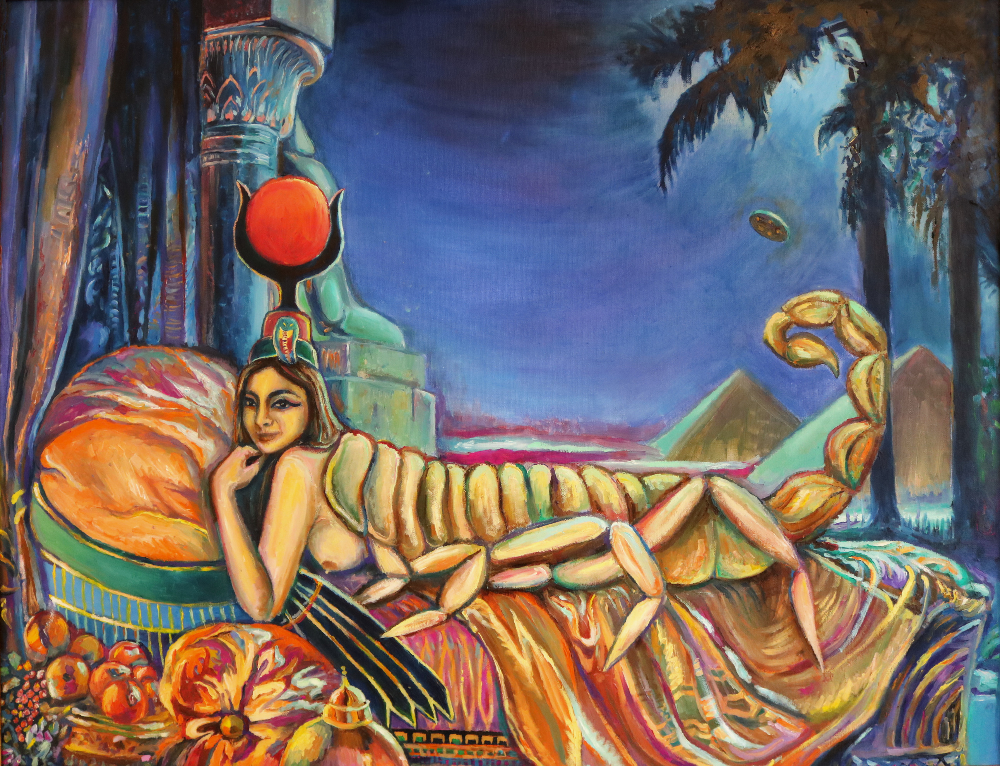
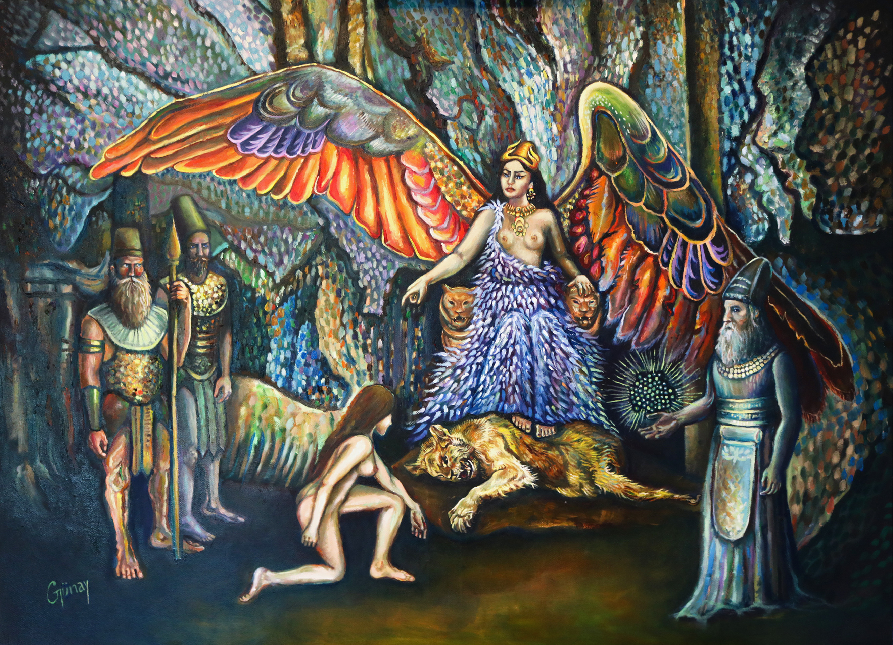
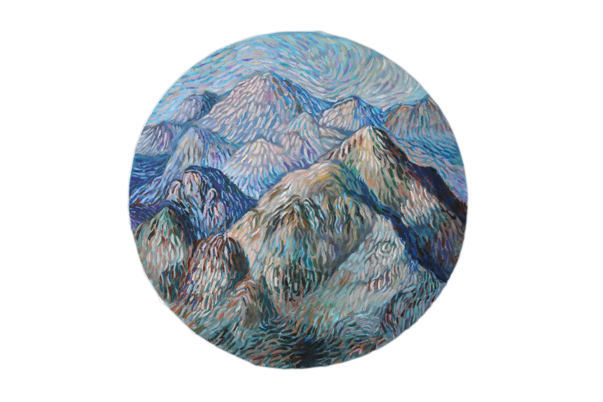
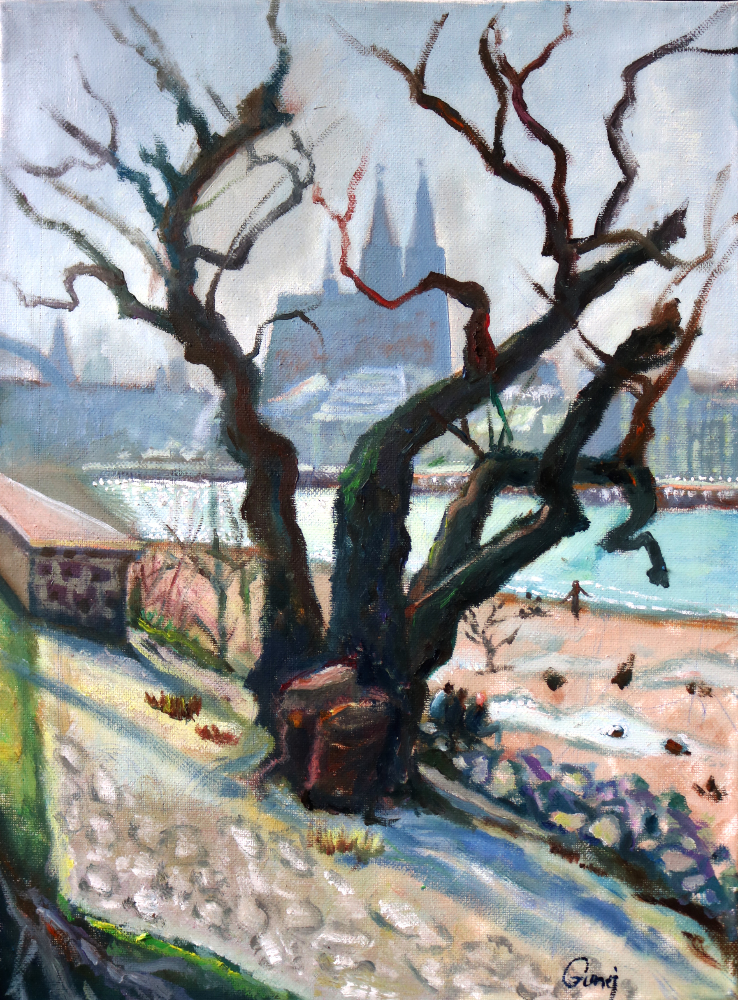
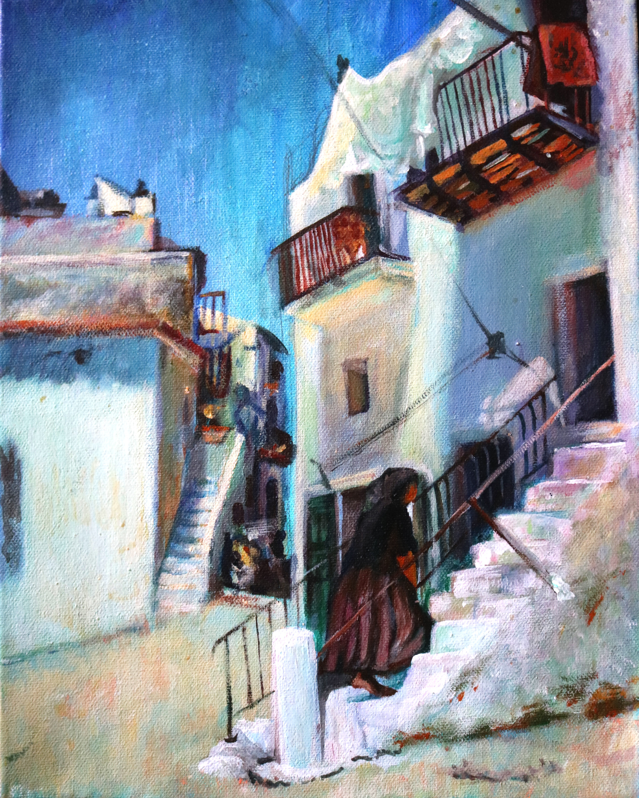
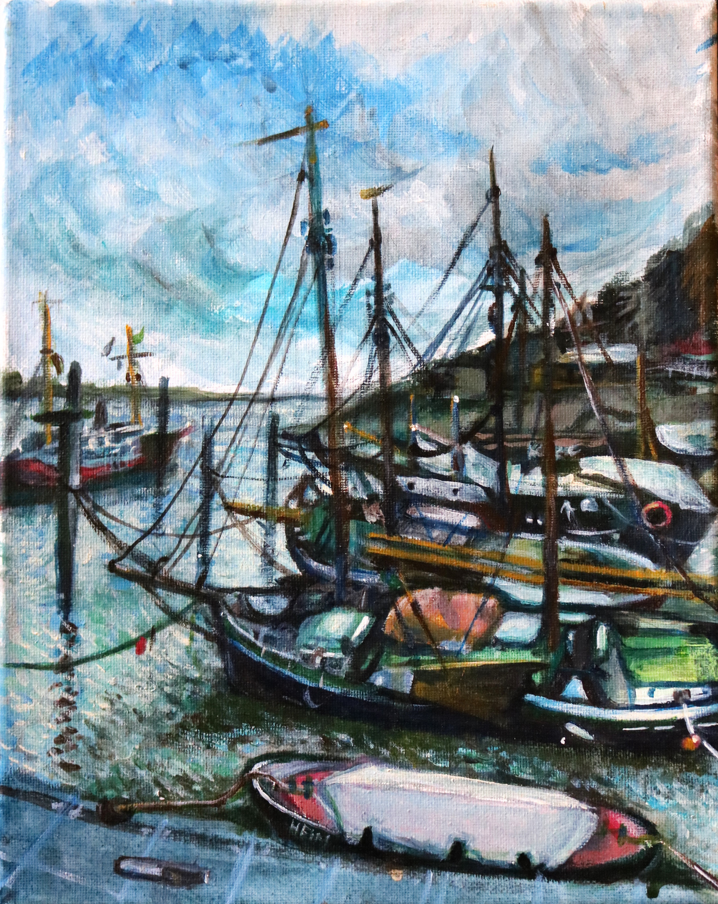

Fine Art Painter
What if these were not myths, but records?
From my earliest years, I felt a strange homesickness for places, centuries and beings I had never seen. I wanted to become a silent observer across civilisations and across time, watching what had once been and what might yet come.
Series
Ancient civilizations, sacred landscapes and the figures who, according to the oldest traditions, shaped humanity's earliest chapters.



Series



About the Artist
Günay Najafzade (b. 1998, Baku, Azerbaijan) is a multidisciplinary artist working in oil and mixed media. Holding degrees in geophysical engineering and climate science, she approaches the ancient world with both imagination and analytical rigor.
In ancient texts, gods appear not only as divine beings but as rulers, builders, astronomers and warriors. Through painting, Najafzade revisits these narratives, transforming her works into visual time machines that travel across millennia of human history — inviting viewers to look beyond accepted narratives and discover the world that is almost forgotten.
Based in Germany, her practice unfolds between Paris and Baku.
Contact
For inquiries about available works, commissions or exhibitions: